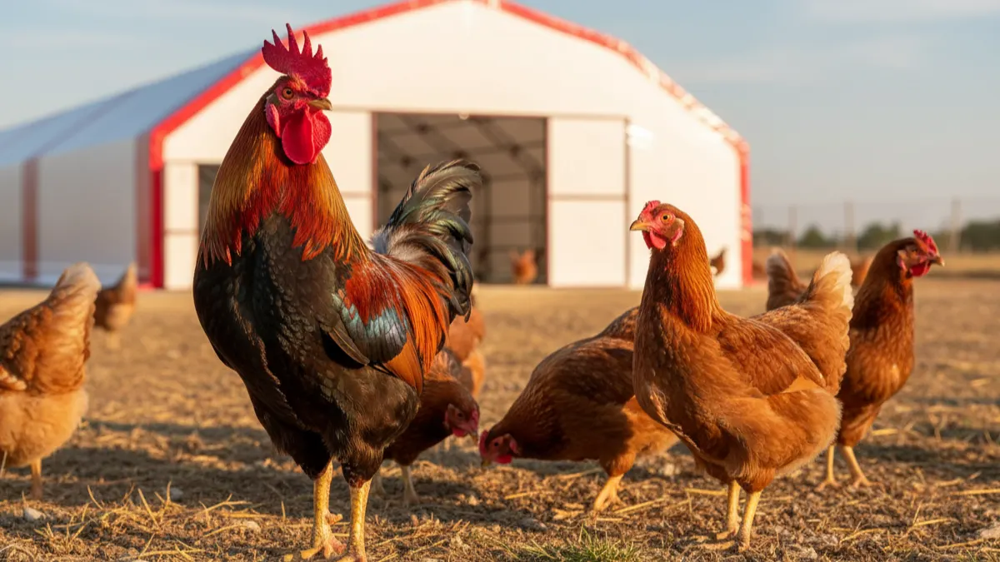

Kümeste horoz şart mı? Kaç tavuğa bir horoz gerekir?
Yumurta için horoz gerekmez. Peki hangi durumda gerekir, kaç tavuğa bir horoz düşer, gürültü ve komşu meselesi ne olur? Sahadan net cevaplar.

"Kümese horoz koymazsam yumurta olmaz mı?" sorusu özellikle yeni başlayanlardan sık gelir; altında farklı bir korku yatar çoğu zaman: horozsuz sürünün düzeni bozulur mu, tavuklar şaşırır mı? Cevap kısa: hayır, yumurta için horoza ihtiyaç yok.
Horoz olmadan da tavuk her gün yumurtlar. Horozun kümesteki gerçek işi başka: sürü düzeni, tehlike uyarısı ve civciv üretmek isteyenler için döllenme. Bu üçünden hiçbirine ihtiyacınız yoksa horozsuz bir kümes işletmekte hiçbir sakınca yok.
Döllenmiş yumurtayla döllenmemiş yumurta arasında görünüşte hiçbir fark yoktur; horozun sürüye kattığı üç şey ise düzen, tehlike uyarısı ve döllenmeden ibarettir. Kaç tavuğa bir horoz gerektiği ve horoz bulundurmanın getirdiği gürültü meselesi de ayrı birer başlık.
Yumurta için horoz gerekir mi?
Hayır, gerekmez. Tişik tavuk, horoz olsun olmasın belirli bir yaşa geldiğinde yumurtlamaya başlar; bu, üreme sisteminin doğal bir işleyişidir ve horozun varlığına bağlı değildir. Markette gördüğünüz yumurtaların neredeyse tamamı da zaten horozsuz sürülerden gelir.
İkisi arasında görünüşte fark yoktur; kabuk rengi, boyut, sarı-ak oranı aynıdır. Yemek amaçlı tükettiğiniz yumurtada döllenmiş olması hiçbir şey değiştirmez, çünkü kuluçkaya yatırılmadığı sürece civciv gelişimi başlamaz. Sofralık yumurta üretimi yapan bir üretici için horoz, üretim zincirinin bir parçası değildir.
Karışıklık genelde köyde büyüyen üreticilerin çocukluk hafızasından geliyor: eskiden hemen her hanede bir horoz vardı, o yüzden "horozsuz kümes eksik kümes" gibi bir izlenim yerleşmiş. Oysa o horozlar çoğunlukla üretim gerekçesiyle değil, gurk çıkarmak ve alışkanlık yüzünden tutulurdu. Ticari amaçlı yumurta üretiminde, ister 50 tavuklu bir aile kümesi ister 500 tavukla kurulan bir işletme olsun, horoz olmadan da verim hiçbir şekilde etkilenmez.
Tavuğun yumurtlama sıklığını belirleyen asıl etkenler yaş, ırk, beslenme ve gün ışığı süresidir; horoz eklemek verimi artırmaz, çıkarmak da düşürmez. Verim düşüşü yaşayan bir üretici sorunu genelde bu dört etkende arar; yumurta verimini düşüren hatalar yazısı bu başlıkları tek tek açıyor.
Horozun kümesteki gerçek işlevi nedir?
Horoz sürüye üç şey katar: düzen, uyarı ve isteğe bağlı olarak döllenme. Yumurta üretimiyle ilgisi yoktur; asıl katkısı sürünün günlük hayatında görülür.
- Sürü düzenini kurar. Horoz bulunan bir sürüde tavuklar arasındaki hiyerarşi genelde daha az kavgayla oturur; horoz yem bulduğunda tavukları çağırır, tehlike anında öne geçer.
- Nöbetçilik yapar. Gökyüzünde dönen bir atmaca ya da çite yaklaşan bir köpek gördüğünde horoz sert bir uyarı sesi çıkarır, sürü anında saklanır. Bu refleks yetişkin tavuklarda da vardır ama horoz genelde daha erken ve daha yüksek sesle tepki verir.
- Döllenmeyi sağlar. Civciv çıkarmak, kendi sürünüzü kendi yumurtanızdan yenilemek istiyorsanız döllenmiş yumurtaya ihtiyacınız var; bu da ancak horozla mümkün.
İlk iki madde "olursa iyi olur" kategorisinde kalır, üçüncüsü sadece civciv üretim hedefiniz varsa zorunlu hale gelir. Sofralık yumurta satan, civciv üretmeyen bir üretici için horoz bir tercih meselesidir.
Nöbetçilik konusunda gerçekçi olmakta fayda var: horoz, kümesin etrafında dolaşan bir tilkiyi ya da köpeği fiziksel olarak durduramaz; büyüklük ve güç farkı bunu engeller. Yaptığı şey erken uyarıdır. Gerçek yırtıcı koruması çit, tel örgü ve gece kilitli kapı gibi yapısal önlemlerle sağlanır; horoz bu önlemleri tamamlayan bir alarm görevi görür.
Kaç tavuğa bir horoz gerekir?
Genel kabul gören oran 8-12 tişik tavuğa 1 horozdur. Bu oran hem döllenme oranını yeterli tutar hem de horozlar arası kavgayı, tavuklar üzerindeki aşırı baskıyı önler.
Oranın altında ya da üstünde kalmanın kendine göre sonuçları var:
| Durum | Sonuç |
|---|---|
| 1 horoza 20-30 tavuk | Döllenme oranı düşebilir, bazı tavuklar hiç çiftleşme fırsatı bulamayabilir |
| 1 horoza 8-12 tavuk | Dengeli oran; hem döllenme yeterli hem sürü sakin |
| 1 horoza 3-4 tavuk | Tavuklar üzerinde aşırı çiftleşme baskısı, sırt ve kanat tüylerinde yolunma |
| Birden fazla horoz, aynı sürü | Horozlar arası kavga riski, hâkimiyet mücadelesi sık görülür |
Küçük aile kümeslerinde 10-15 tavuğa bir horoz yeterince pratik bir başlangıç noktasıdır. Büyük ölçekli sofralık üretimde çoğu işletme horoz bulundurmaz, çünkü amaç civciv değil yumurtadır; tavuk başına m² hesabı yaparken de horoz için ayrı bir alan planlamanıza gerek kalmaz.
Aynı kümeste birden fazla horoz tutmak isteyenler için bir uyarı: horozlar birbirini rakip görür, kümeste kavga ve yaralanma riski oran aştıkça belirgin şekilde artar. Gurk için civciv üretimi hedefliyorsanız bile tek horoz, doğru oranla, genelde yeterlidir.
Döllenme ve gurk isteniyorsa ne değişir?
Kendi civcivinizi kendi sürünüzden yetiştirmek istiyorsanız horoz artık zorunlu hale gelir; döllenme olmadan kuluçkalık yumurta elde edilemez.
- Sürüye oran dahilinde (8-12 tavuğa 1) sağlıklı bir horoz katın.
- Kuluçkalık yumurtaları günde en az bir-iki kez toplayın, çatlak ya da aşırı kirli olanları ayırın.
- Toplanan yumurtaları serin (13-15°C) ve nemli bir ortamda, ideal olarak 7-10 günü geçirmeden kuluçkaya koyun.
- Doğal gurk isteniyorsa kuluçkaya yatmaya istekli bir tavuğu ayrı ve sakin bir folluğa alın; yapay kuluçka makinesi kullanılacaksa üretici talimatlarına göre sıcaklık ve nem ayarlayın.
- Yaklaşık 21 gün sonra civciv çıkışını takip edin, çıkışın ardından civcivleri ısı kaynağı olan ayrı bir bölmeye alın.
Civcivin ilk hafta ihtiyaç duyduğu ısı, yem geçişleri ve sağlık kontrolü kendi başına geniş bir konu; kaç m² ve hangi ekipman gerektiğini yarka ve civciv alırken dikkat edilecekler yazısından takip edebilirsiniz. Döllenme ve gurk hedefiniz yoksa bu adımların hiçbirine ihtiyacınız yok, horozsuz da gayet iyi işleyen bir sürü kurabilirsiniz.
Horozun dezavantajı: gürültü meselesi
Horozun en somut dezavantajı gürültüsüdür. Horoz ötüşü belli bir saate bağlı değildir; ışık değişimi, ses, hareket gibi tetikleyicilerle günün her saati, gece yarısı dahil ötebilir.
Bu da özellikle yerleşim yerine yakın kümeslerde, komşuluk ilişkilerinde gerçek bir sorun haline gelebiliyor. Şehir çeperinde ya da köy içinde evlerin birbirine yakın olduğu yerlerde bir horozun düzensiz ötüşü zamanla şikayet konusuna dönüşebilir. Pratik bir referans olarak: birçok yerel imar/tarım uygulamasında hayvan barınağı (kümes, ahır gibi yapılar) için konut sınırından bırakılan tampon mesafe genelde 3-5 metre aralığında başlar, bazı yerleşimlerde bu daha da fazladır. Bu rakam kesin bir yasal zorunluluk olarak değil, saha pratiğinde sık görülen bir başlangıç aralığı olarak okunmalı; kümes kurulum yerini planlarken ruhsat ve kayıt yazısına bakmanızı, kesin ve bağlayıcı mesafeyi yerel belediye veya tarım müdürlüğünden teyit etmenizi öneririz.
Yalnızca sürü düzeni veya nöbetçilik için horoz düşünüyorsanız, gürültü tarafını göz ardı etmeden karar vermek daha sağlıklı olur. Çözüm bazen basittir: kümesi komşu parselden mümkün olduğunca uzak konumlandırmak, horozu geceleri kapalı ve sesi biraz kesen bir bölmede tutmak gibi.
Horoz seçerken nelere dikkat edilir?
Horoz eklemeye karar verdiyseniz seçim, sürünün huzuru açısından tek başına yumurtlama oranından daha önemlidir. Agresif bir horoz hem tavuklara hem kümese giren insanlara sorun çıkarabilir.
- Yaş: Genç bir horoz sürüye alışmaya, hiyerarşiyi öğrenmeye daha yatkındır. Çok yaşlı ya da başka bir sürüden gelen horozlar başlangıçta huzursuzluk yaratabilir.
- Irk mizacı: Bazı ırklar doğası gereği daha sakin, bazıları daha ürkek ve hareketlidir. Sahada sık gözlemlenen genel eğilim şu yönde: yerli/köy ırkları ve Ataks gibi melez hatlar genelde daha sakin ve toplumsal davranır, insana alışmaları daha kolaydır; Leghorn/Ligorin tipi hafif hibrit ırklar ise yüksek yumurta verimine karşılık daha ürkek, hareketli ve sese/harekete karşı daha tepkisel olma eğilimindedir. Bu kesin bir kural değil, ırk bazlı bir eğilimdir — aynı ırktan bireyler arasında da fark görülebilir. Yeni başlayan bir üretici için sakin mizaçlı ırklar tercih edilirse insana ve tavuklara yönelik saldırganlık riski azalır.
- Sağlık kontrolü: Yeni katılan her horoz gibi bir süre ayrı tutulup gözlemlenmeli; hasta bir hayvanı doğrudan sürüye katmak diğerlerine bulaşma riski taşır. Genel sağlık takibi hastalık ve aşı takvimi yazısının konusu.
- Fiziksel durum: Topallık, göz veya ibik sorunu olan bir horoz hem çiftleşme performansında hem sürü içi hiyerarşide zorlanır.
Agresif bir horozla karşılaştıysanız katlanmak zorunda değilsiniz; bu davranış genelde ırk, yaş ve bireysel mizaçla ilgilidir, eğitimle kolayca değişmez. İnsana saldıran bir horozu sürüde tutmak, özellikle çocukların kümese girdiği aile işletmelerinde risklidir.
Horozsuz sürüde düzen bozulur mu?
Hayır. Horoz olmayan bir sürüde tavuklar kendi aralarında yine bir hiyerarşi kurar; genelde en baskın tavuk lider rolünü üstlenir, yem sırasını ve tünek yerini o belirler.
"Gaga sırası" adı verilen bu düzen tavuklarda doğal bir sosyal davranıştır ve horozun varlığına bağlı değildir. Baskın tavuk yemliğe ilk yaklaşan, en iyi tünek yerini seçen, gerekirse diğerlerini uyaran hayvan olur. Küçük ölçekli sürülerde bu geçiş genelde birkaç gün içinde kendiliğinden oturur, ekstra bir müdahale gerekmez. Yeni tavuk katıldığında ya da sürü büyüdüğünde hiyerarşi kısa süreliğine yeniden kurulur; bu horozlu sürülerde de horozsuz sürülerde de görülen normal bir süreçtir.
Tehlike uyarısı konusunda da yetişkin tavuklar tamamen savunmasız değildir; gölge ya da ani hareket gördüklerinde onlar da kaçar, seslenir. Horozun buradaki farkı, genelde daha dikkatli ve daha yüksek sesle tepki vermesidir, ama bunun yokluğu sürüyü çaresiz bırakmaz. Kümesin fiziksel güvenliği (sağlam çit, kapanan kapı, gece koruması) zaten horozdan bağımsız olarak kurulması gereken bir konu; çit ve kapama detayları için kümesi yırtıcılardan korumak yazısına bakabilirsiniz.
Karar amacınıza bağlı. Sadece yumurta hedefliyorsanız horozsuz bir sürü hem daha sessiz hem de yönetimi daha kolay bir seçenektir. Sürü düzenine katkısını, gurk civcivini ya da nöbetçilik özelliğini önemsiyorsanız, doğru oranla (8-12 tavuğa 1) ve sakin mizaçlı bir horozla bu tercih de gayet iyi işler.
Sık sorulanlar
Yumurta için horoza ihtiyaç var mı?
Döllenmiş yumurta ile döllenmemiş yumurta arasında fark var mı?
Kaç tavuğa bir horoz gerekir?
Kümeste birden fazla horoz olabilir mi?
Horozsuz kümeste sürü düzeni bozulur mu?
Horoz neden gece de öter, komşularla sorun olur mu?
Projenizi birlikte planlayalım
Kapasitenizi ve bölgenizi yazın; ölçü ve teklifi birlikte çıkaralım.
Kapasitenizi yazın